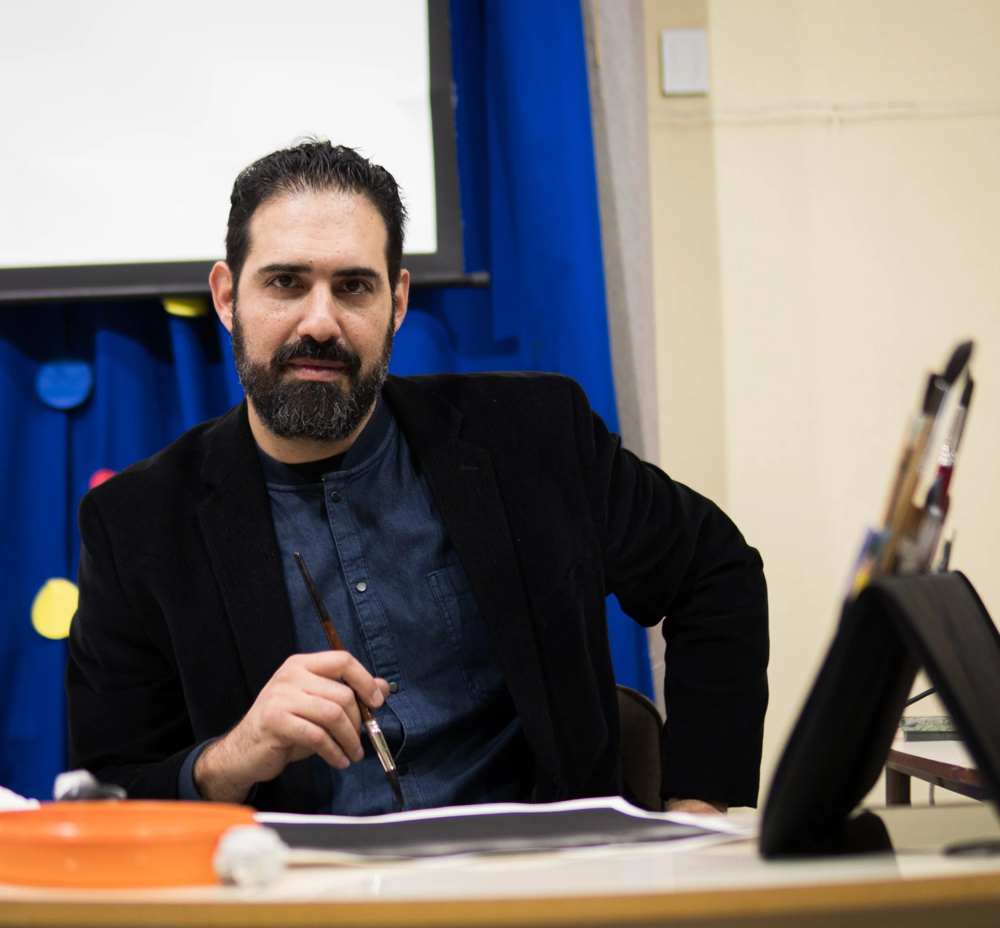
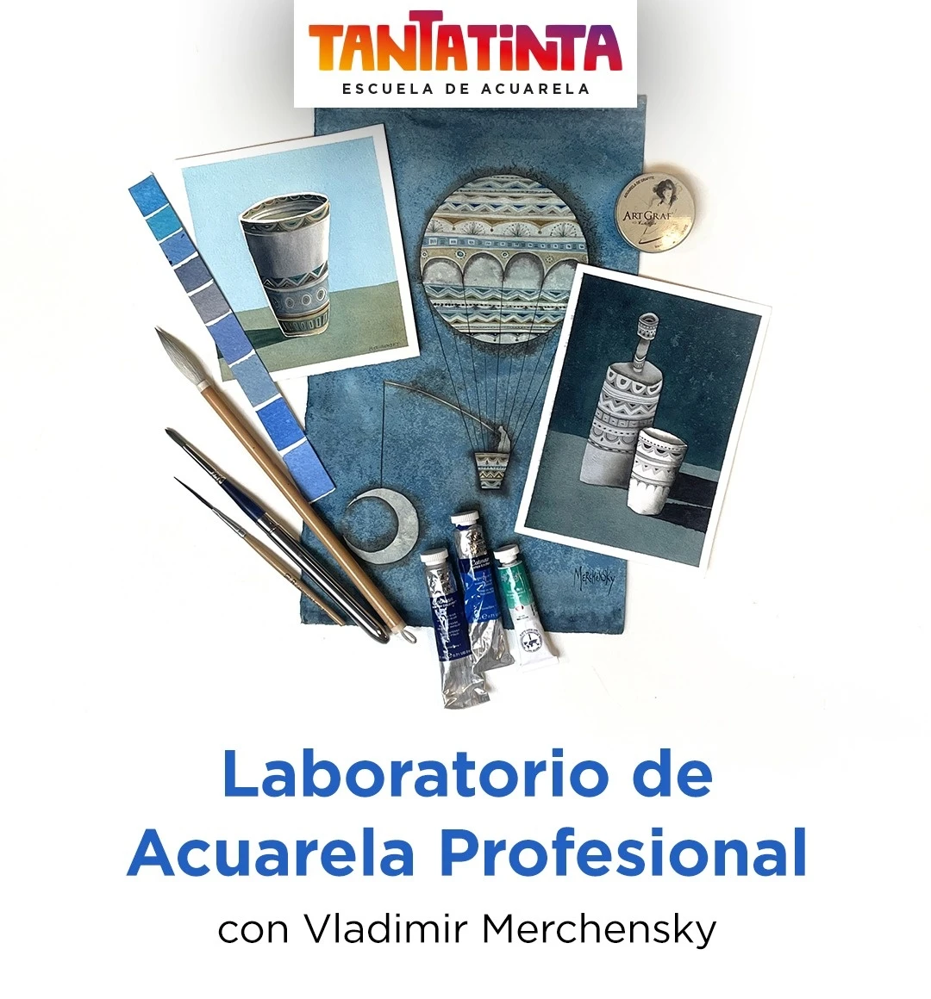

ARTE Y OFICIO
Diez encuentros de dos horas, una vez por semana, guiados por Vladimir Merchensky. Pensado para quienes ya tienen experiencia con la acuarela y quieren profundizar, experimentar y encontrar su propia manera de pintar.
Cupos limitados. Elegís el horario que mejor te quede, martes o viernes.
Tantatinta es una escuela de acuarela con 14 años de trayectoria. Este laboratorio no es un taller de iniciación: está dirigido a quienes ya conocen la técnica y buscan un espacio de práctica sostenida, con la guía de Vladimir Merchensky, para experimentar y desarrollar un estilo propio.
Se dicta una vez por semana durante diez encuentros, con dos horarios a elección: los martes por la tarde o los viernes a la mañana.
Escribinos y te contamos las fechas, el precio y cómo anotarte.
Consultar por WhatsApp